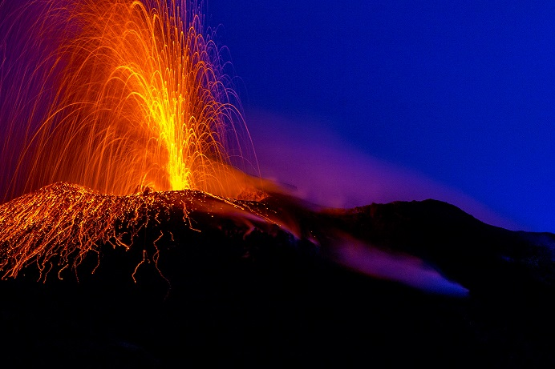

←
←
LEGATA A MITI ANTICHISSIMI E CONSIDERATA FIN DALL'EPOCA CLASSICA LA DIMORA DEL DIO DEL FUOCO, QUESTA TERRA HA SEGNATO PROFONDAMENTE LA STORIA DELLA GEOLOGIA MONDIALE.
L'isola di Vulcano fa parte dell'arcipelago delle Eolie e ha dato il nome a tutti i vulcani. È caratterizzata da attività fumarolica, con emissioni di gas e vapori dal suolo. L'ultima eruzione risale alla fine del XIX secolo. Nonostante l'assenza di eruzioni recenti, il vulcano è considerato attivo. Le sue eruzioni possono essere di tipo esplosivo. L'area è attentamente monitorata per la presenza di gas pericolosi. È anche una meta turistica importante.
| Stato | 🟡 Quiescente |
| Regione | Sicilia |
| Paese | Italia |
| Eruzioni storiche | 20+ |
| Parco naturale | Sì |
